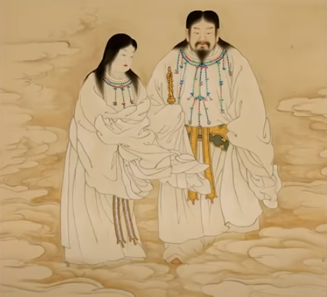
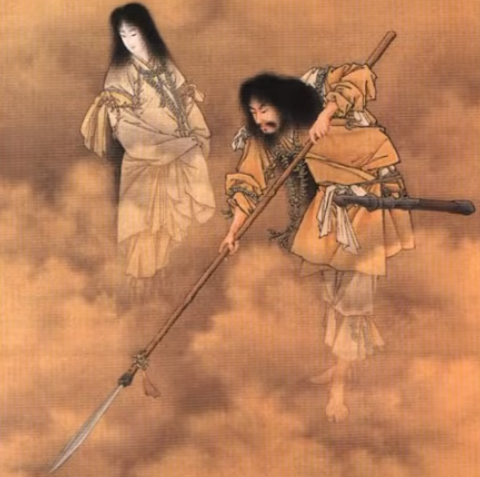
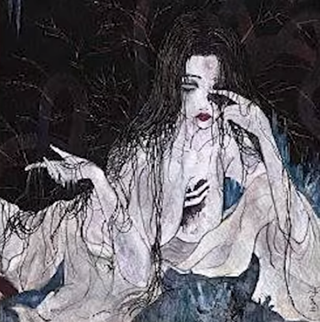
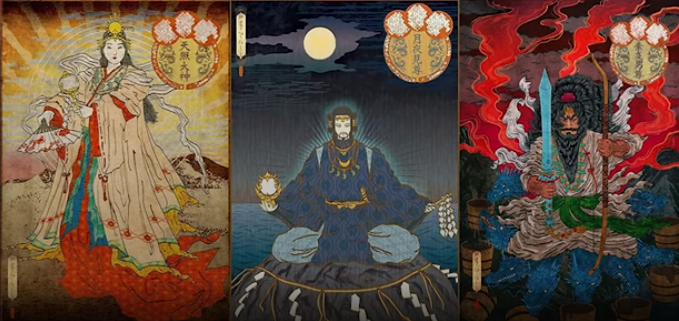
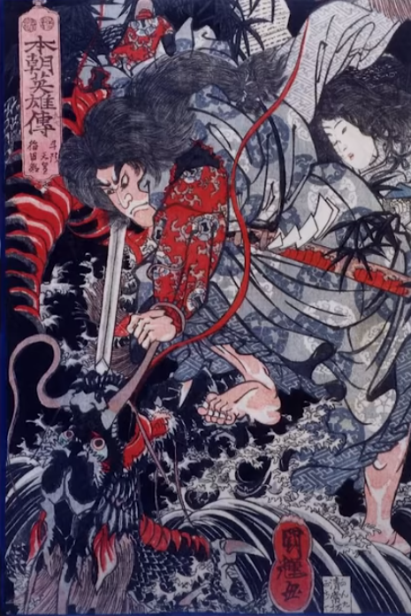
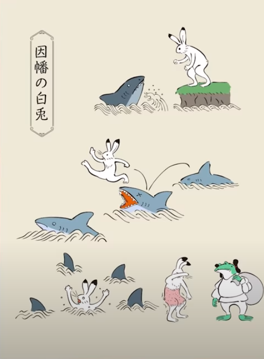
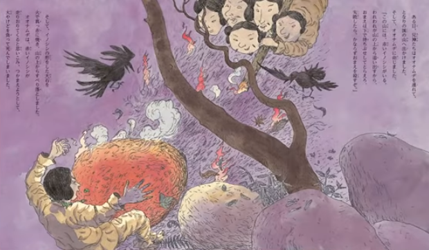
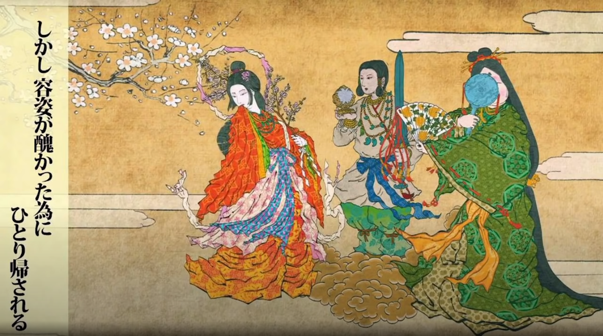

История возникновения Япониипо мнению синтоизма(кратко) Тогда мир еще был чистым сгустком пустоты. Была темнота. И тут из ниоткуда резко появлились 5 божеств. Потом еще 5, еще 5 и еще 5. Они все были бесполые. В самом конце появились 2 последних божества. Последние были с полом: женское божество - Изанами и мужское божество - Изанаги. Они поженились.  Тогда более старшие боги им предложили создать страну. Для этого они вручили им магическое копье.Изанами и Изанаги начали перемешивать мир этим копьем, создавая острова. Сначала появился 1 небольшой остров, потом еще один. И так они создали 8 основных японских островов. Дальше Изанами и Изанаги стали создавать, помимо территории страны, различных богов: бог ветра, дерева и огромное множество других.Немного погодя, Изанами рожает бога огня. Но он оказался настолько силен, что сжег Изанами. Она попала в страну Ёми. Изанаги очень сильно грустил, скучал по своей жене, не знал, куда себя деть. Поэтому он решился пойти в страну Ёми, чтобы забрать оттуда свою жену. Изанаги нашел Изанами: - Я уже съела еду из этой страны, поэтому я не могу вернуться, здесь такие правила, - сказала Изанами. - Может быть мы что-нибудь придумаем? - предлагает Изанаги. - Пойду поговорю со старшими, но ты ни в коем случае не подсматривай, - сказала Изанами и ушла.  Изанаги не дождался, пока жена вернется с переговоров. Подсмотрел. Смотрит и видит, что Изанами выглядит не так, как раньше, теперь она какая-то умершая, страшная. Он сильно пугается и бежит к выходу из страны мертвых, страны Ёми. На что Изанами очень злится: "Я же тебе говрила не смотреть! Теперь мне придется тебя убить!" Теперь она преследует своего до этого обожаемого мужа вместе с другими умершими душами, чтобы убить. Когда Изанаги выбежал из страны Ёми, он взял огромный камень, лежавший поблизости и закрыл проход в страну мертвых, пока еще Изанами и мертвые души не догнали его.
 Уставший от этих всех приключений в стране Ёми Изанаги идет омывать свое тело. В процессе из его кожи рождаются божества, включая 3 основных японских божества: Аматерасу - женское божество, покровительница солнца, Цукуёми - мужское божество, божество луны, Сусаноо - мужское божество, бог ярости. Изанаги поручает поровительнице солнца, Аматерасу, следить за небом, Цукуёми, божеству луны, следить за ночью и богу ярости Сусаноо - следить за океаном. Сусаноо не соглашается следить за океаном, оправдывая это тем, что ему это не интересно, и проказничает. Изанаги рассердился на него и сказал: "Ну и уходи, делай, что хочешь." Сусаноо идет к Аматерасу на небеса и начинает ей всячески докучать. На что она обижается, говорит, что не может больше этого терпеть, и прячется в пещеру. Солнце уходит с небес, наступает темнота (солнечное затмение). Другие боги решают, что нужно вытащить Аматерасу из пещеры. Но необычным способом. Они начали танцевать рядом с пещерой, надеясь, что она выйдет оттуда, чтобы посмотреть, что там снаружи происходит, и кто там веселится без нее. Их задумка удалась. Аматерасу, богиня солнца, выходит из пещеры. Она, поразмыслив немного, решает изгнать Сусаноо на землю, дабы он образумился. Сусаноо появляется на земле и встречает Ямата-но ороти , который досаждал уже живущим на земле божествам. Сусаноо рассправился с ним очень интересным способом: вначале Сусаноо ставит саке дракону, чтобы напоить его, и только потом убивает. Выходит так, что Сусаноо, бог ярости, на небесах был проказником, которого изгнали на землю, а на зесле он герой, который победил восьмиглавого дракона и взял в жены красивую принцессу-богиню Кусинаду-химе.Один из потомков бога ярости Сусаноо - Оокунинуши. У него было много братьев и сестер, которые рождены на земле, его терпеть не могут и гнобят. До такой степени, что как-то Оокунинуши и братьями разговаривают о том, какая девушка им нравится, оказывается, что всем нравится одна и та же девушка-богиня, видно очень красивая была. Оокунинуши сказал, что ему тоже она нравится. А ему братья отвечают, что он самый младший и его никогда не выберут, споря между собой, кого из них выберут. Один из братьев предложил сходить к этой девушке и спросить, кого же она выберет. Братья согласились и пошли. По пути они встретили красного кролика.
 - Что же с тобой приключилось?- Я с акулой поссорился. - Как ты с ней поссорился? - Мы, кролики, живем на небольшом острове и нас очень много. И акул в море тоже очень много. Я говорю акулам: "Давайте я посчитаю, кого больше, акул или кроликов у нас на острове? Только вам нужно будет всем выстроиться в линейку." Акулы заинетерсовались и говорят: "О, давайте вы нас посчитаете. Нас еще никогда никто не считал. Как нам выстроиться в линейку?" Я им отвечаю: "Ну, выстроитесь от нашего острова до главного острова Японии. А я буду прыгать по вам и считать." Акулы согласились. Они выстроились, и я начал прыгать по акулам и считать их. В конце я збился с счета, на что акулы разозлились и открыли свой рот, а с меня слетела вся кожа. - Ничего себе история. Давайте мы над ним подшутим, - сказали потомки бога ярости, говоря так, чтобы кролик не услышал. - Знаешь, если ты прыгнешь в морскую воду, тебе станет лучше, - сказали потомки. - Да? Не знал. Кролик прыгнул в воду, а братья ушли. Тут рядом проходит Оокунинуши. - Боже, как больно, как больно! - сказал кролик, выпрыгнув из воды. - Красный кролик, что ты делаешь? Красный кролик рассказал все, что с ним приключилось, Оокунинуши. - Не слушай их, у меня братья больные на голову! Тебе нужно в пресной реке помыть свои раны, тогда тебе станет лучше, - дал совет кролику Оокунинуши. Кролик делает так, как сказал ему Оокунинуши и ему и вправду становится лучше. - Большое спасибо тебе, ты меня спас! А куда вы идете? - говорит кролик. - Мы идем узнать, кто из нас больше всего нравится богине, - ответил Оокунинуши, назвав имя этой богини. - Я тебе гарантирую, что ей нравишься именно ты. Это мое предскащание тебе. Все потомки Сусаноо доходят до богини, включая Оокунинуши. И оказывается, что кролик был прав и богине правда нравится младший из братьев, Оокунинуши. Все братья очень сильно злятся на него, думают его разыграть и говорят: "Знаешь, Оокунинуши, мы сейчас пойдем в горы охотиться на кабанов диких. Давай мы будем пугать с гор кабана, а ты будешь его внизу горы ловить." На что Оокунинуши соглашается. Они все вместе пришли к этой горе. Братья поджигают огромный камень и скидывают его с горы прямо на Оокунинуши, который в последствии умирает. Его мать была шакирована этим событием и просит других божеств его оживить. На что другие божества соглашаются и оживляют его. Смерть и оживление Оокунинуши продолжаются несколько раз. После последнего оживления, Оокунинуши взял в жены знаменитую принцессу, добыл некоторые оружия богов и начал строить страну, которая в последствии стала основой Японии.Потомки бога ярости Сусаноо начали строить Японию, что очень не понравилось Аматерасу, богине солнца, которая следила за всем этим с небес. Она сказала: "Почему мы отправили на землю Сусаноо, а он строит там страну как будто это его страна? Это наша страна!" Так началась война между потомками Сусаноо и Аматерасу, в которой победила Аматерасу и становится владельцем страны. Внук богини солнца, Аматурасу, Ниниги и становится первым правителем Японии.  Ниниги ищет себе жену на земле среди других божеств и находит принцессу Сакуя-химэ, которая красива, как цветущий цветок, и говорит ее отцу, что он внук знаменитый Аматерасу, и просит его дочь в жены. На что отец соглашается, говоря что отдаст ему не только одну дочь, но другую тоже, и отсылает Ниниги Сакую-химэ, изначально понравившуюся Ниниги и Иванагу-химэ, сестру Сакуи-химэ. На что Ниниги соглашается, думая, что две жены лучше, чем одна. Смотрит он на своих жен и видит, что одна жена, Сакуя-химэ, очень красивая, а вторая, Иванага-химэ, совсем не в его вкусе. Поэтому Ниниги отправляет Иванагу-химе обратно к отцу, что было огромной ошибкой, потому что красивая Сакуя-химэ символихировала мимолетность момента как цветущий цветок, а Иванага-химэ символизирует скалу, камень, вечность и бессмертие всех богов, живших до этого. Когда Ниниги отказался от Иванаги-химэ, он отказался и от возможности жить вечно. Поэтому Ниниги, Сакуя-химэ и все их потомки стали смертными, т.е. людьми.Правнук Ниниги по имени Джинму стал первым императором Японии. До наших дней правило 125 императоров, сейчас 126-й. И считается, что все они потомки самого первого императора Джинму, который является потомком Аматерасу. |